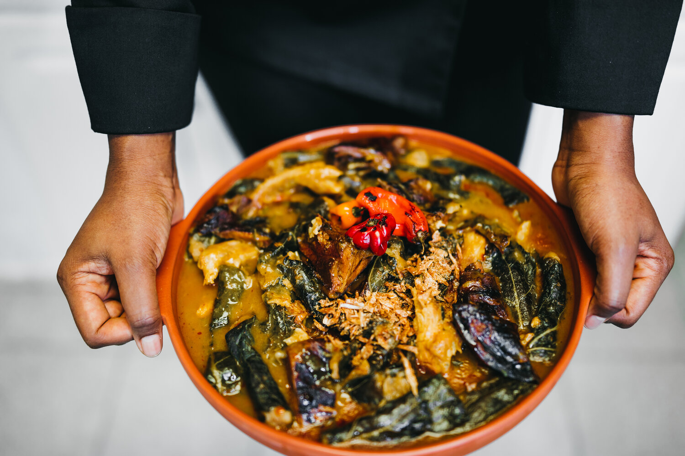

Ekwang Recipe

Ekwang licking finger meal
It’s a Cameroonian dish that originates from the Oroko people in Ndian Division in the Southwest Region of Cameroon.
Ingredients
- Cocoyam Leaves or Collard Greens
- Large Makabo/Malanga Cocoyams
- Large Smoked Catfishes (Deboned)
- Ground Country Onion
- Ground Bush Pepper
- Habanero Peppers
- Palm Oil
- Crayfish
- Maggi
- Salt
Preparation Steps
- Wash the smoked hard chicken and put it in a pot.
- Add a pinch of salt and enough water to cook the chicken until it’s done. Add enough water so that the chicken does not dry off but instead leaves you with some stock left over for later use.
- Separate the chicken from the stock and set aside.
- Wash the collard greens, remove the middle vein from each leaf and carefully cut it into palm size pieces.
- Put some water to boil and sit. Then place the leaves into a bowl and pour the hot water over it.
- Allow the collard greens to sit for about 3 minutes then drain the hot water. Immediately, place the leaves under cold running tap water to stop it from over cooking. This process makes the leaves more pliable when wrapping the Ekwang.
- Peel cocoyams with a peeler or a sharp knife.
- Thoroughly wash the cocoyams until clean and let it sit in a bowl of clean water.
- Grate the cocoyams on the largest surface of the grater to form the cocoyam paste.
- Aerate the cocoyam paste by continuously beating to reach a fluffy texture.
- Grease the inside of a pot with about 1/2 cup of palm oil and set aside.
- Scoop a teaspoon of the grated cocoyam paste onto a piece of the cut collard green and wrap tightly by rolling the leaf with your fingers. From time to time, aerate the cocoyam paste as you are wrapping to maintain the fluffy texture.
- Place the wrapped Ekwang into the greased pot in a crisscross pattern
- Continue to place each wrapped Ekwang in this pattern until your cocoyam paste is halfway finished.
- Add half the quantity of smoked fish and chicken. Then sprinkle this layer with half the quantity of crayfish.
- Fill up your pot by repeating step 14 with your remaining cocoyam paste. Add the remaining smoked fish and chicken on top of your last layer of Ekwang. Sprinkle the remaining crayfish.
- Blend the habenero peppers with a little bit of water.
- Add the blended habenero peppers, bush pepper and half your desired quantity of salt and bouillon.
- Place the pot on the stove and add 2 cups of water. On medium heat, allow the pot to simmer for the Ekwang to become firm. You will know the Ekwang is firm when the tips of the Ekwang change color from a white to a greyish tone.
- Now you can add more water into the pot to reach the top layer of the Ekwang. Cook on medium heat until the water level reduces to half the quantity. DO NOT STIR THE POT as it will break the Ekwang apart creating a thick consistency.
- Add the chicken broth, palm oil, country onion and enough water (if needed) into the pot to cover the level of the Ekwang. DO NOT STIR THE POT.
- Add the remaining of your desired quantity of salt and bouillon into the pot then tilt the pot side to side to evenly distribute all spices. DO NOT STIR THE POT
- Allow to cook for about 25 minutes under medium-low heat.
- Serve the Ekwang and enjoy with your choice of beverage!